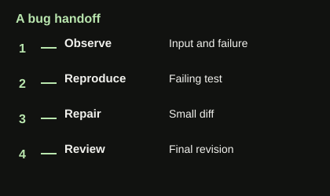
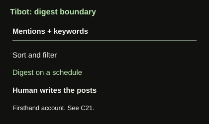

Inside the workflows
Follow the steps that practitioners describe, then inspect what their evidence can establish.
Practitioner workflows
Problem: a coding agent can produce plausible changes before anyone agrees on the outcome. Start with one observable failure, then preserve evidence through each handoff.


Identity checks
These are search leads, not proof that similar names identify the same person. Roles refer to the cited source, not an assumed current affiliation.
| Supplied name | Verified identity | Official URL | Product or role | Supporting evidence | Status |
|---|---|---|---|---|---|
| Poteto or Potetoa | Lauren Tan is named as pstack author. The poteto profile uses “lauren poteto”. | pstack | Workflow author | C01 C02 | Partial match. Potetoa remains unresolved. |
| Tibo | Tibo Louis-Lucas is a candidate | Official channel | Creator associated with @tibo_maker | C23 | Candidate only. The supplied name alone does not establish the match. |
| Dario | Not verified | Not in source | Not established | Given name alone is insufficient | Unresolved |
| Borris or Boris | Boris Cherny is a candidate | Anthropic webinar | Anthropic technical staff at the webinar | C03 | Candidate. Borris is not independently resolved. |
| Codie Sanchez | Codie Sanchez | Contrarian Thinking | Founder and CEO as described on the press page | C17 | Verified identity |
| Matt Potcock or Pocock | Matt Pocock | Skills repository | Repository owner and public coding practitioner | C04 C16 | Likely spelling correction. Original spelling remains a lead. |
| Mayank Shah | Not verified | Not in source | Not established | Similar given names do not establish identity | Unresolved |
| Greg Isenberg | Greg Isenberg | Public post | Author of a proposed agent business process | C15 | Verified author of this post. The post is advice, not a deployment audit. |
| Lab engineers | Cat Wu, Boris Cherny and Cal Rueb | Anthropic webinar | Product and technical staff at time of webinar | C03 | Verified for the cited event |
Worked example: a bug handoff
Anthropic describes an explore, plan, code and commit sequence. Matt Pocock describes a separate reproduction and review pattern. These are public practices, not proof that either sequence always wins. C06 C16
- Record the input, observed failure, expected result, and revision.
- Ask an agent to locate the relevant path without edits.
- Write a failing test for the behavior.
- Make one small repair and run the test.
- Review the diff against the original requirement.
- Run the relevant regression checks on the final revision.
Input: a duplicate request creates two records.
Task: locate the cause, then propose a minimal repair.
Constraints: do not contact external services or change unrelated files.
Output: affected paths, hypothesis, test, diff, command results, remaining risks.
Verification: show the failure before the repair and a pass afterward.
Stop: ask for missing facts if the behavior cannot be reproduced.The example is illustrative. Use a local repository and Python test environment. Model access and cost depend on the selected product. No run is claimed here. A failure to reproduce calls for a smaller fixture or better logs, not repeated speculative edits. For an executable task, use the service lab.
Practice
Complete: Fill in the expected behavior and final test command for a retry bug. Independent: Repair a different defect and keep the first failing trace. Retrieve: Why must a review name the tested revision? Transfer: Apply the handoff to a data pipeline. Delayed review: Tomorrow, reproduce the test from your notes without the original session.
Grok Bot and a public operator example
In October 2026, Lauren Tan reported that her Tibot monitors mentions and keywords, then produces a sorted digest. She said that she writes her own posts. She described a daily or hourly schedule and optional blocking. That is a firsthand account, not an independent test of accuracy or permissions. C21


Her separate guide recommends a few specialized bots, reusable skills, filtered events, and restraint with frequent routines. She warns that routines can cost more when they run often. C20 Her release example describes a Slack release manager, contributor notifications, build monitoring, and automated checks. She decides whether a severe issue needs a patch or can wait. The source does not establish the complete configuration, cost, failure rate, or independence of the checks. C22
- Define the monitoring topic and approved public sources.
- Request a daily digest with source links and timestamps.
- Require a person to verify each item before use.
- Keep posting, blocking, and account changes outside the trial.
- Compare missed items and review time against a manual sample.
Purpose: produce a daily digest for the supplied public keywords.
Inputs: approved keywords, source list, and a fixed time window.
Constraints: do not post, block accounts, or contact people.
Output: source link, time, short summary, and uncertainty for each item.
Verification: remove duplicates and flag missing dates or inaccessible sources.
Stop: report connector errors and leave the digest incomplete.Access and available connectors depend on the account and product. Confirm current settings before use. The draft above is illustrative and was not executed. An empty digest may mean no matches or a failed connector. Inspect the run log and source window before retry. Estimate cost from actual runs and review time. Add schedules only after the manual trial meets the acceptance checks.
November leads: Tan linked a public engineering talk on November 14. Its transcript was not inspected. C27 Isenberg summarized a guest setup with a content bot that scans twice daily and suggests three ideas. That is the host's report, not independent proof of its results. C24 Sanchez's November video was located, but its transcript was not inspected. No revenue or performance result is inferred. C25 The targeted search did not verify a Grok Bot identity or workflow for Mayank Shah or the supplied Dario.
Evidence limits and search record
Searches covered official documentation, repository pages, public posts, a newsletter, a webinar page, and vendor cases. Searches also surfaced YouTube walkthroughs, Reddit-style community accounts, podcasts, and secondary summaries. Their transcripts or original evidence were not verified. No timestamps are asserted. Two targeted passes searched for ambiguous identities and failure or counterexample evidence. Similar names and promotional claims remain unresolved. These passes do not establish exhaustive coverage.